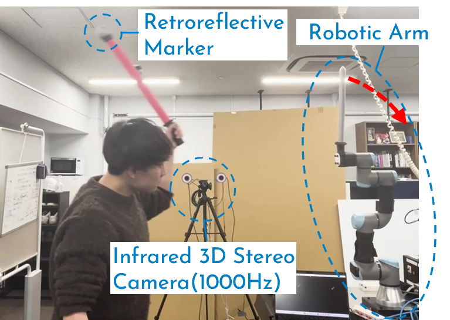

Overview
In a university robotics course, I worked in a team of three to develop a robot capable of engaging in mock sword fights with humans. The robot tracks and predicts the trajectory of a human-held sword and blocks it with its own. I was responsible for trajectory prediction using a conic curve model.
